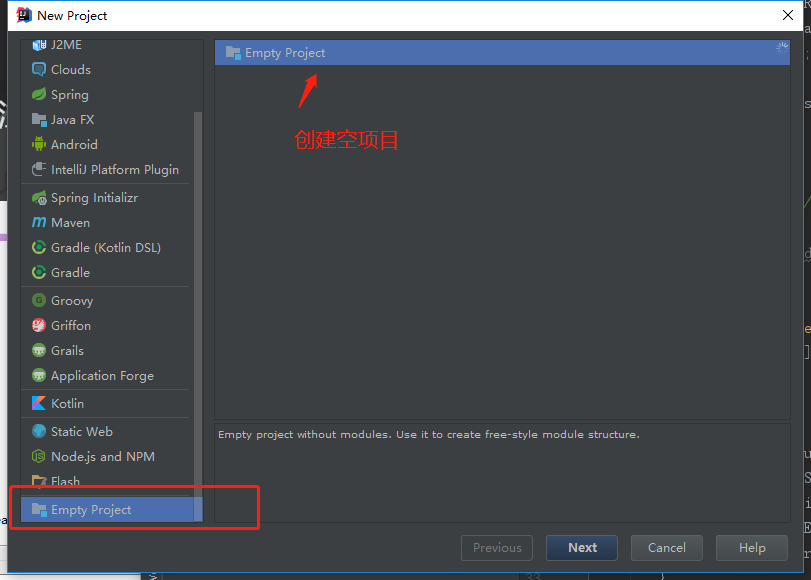
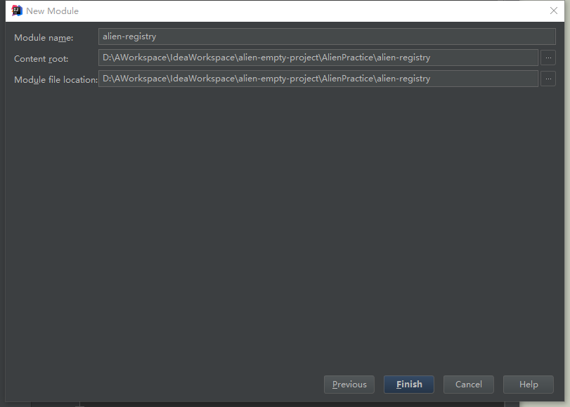
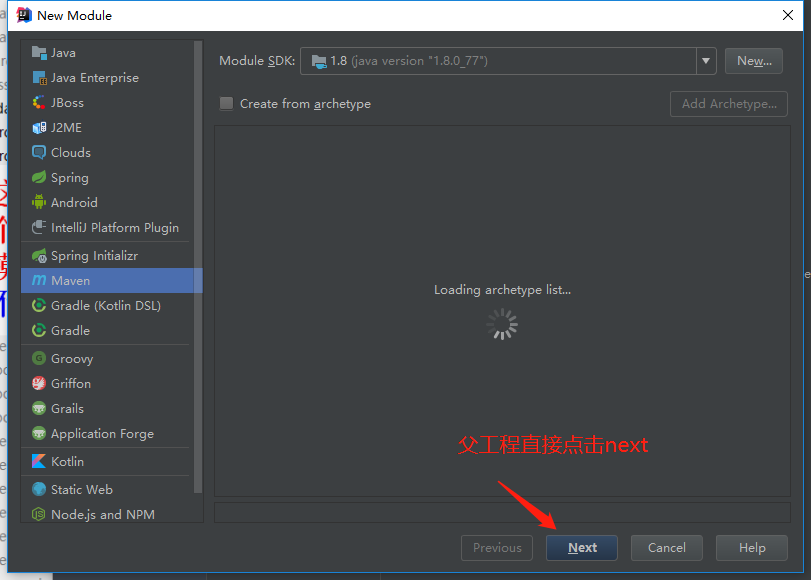
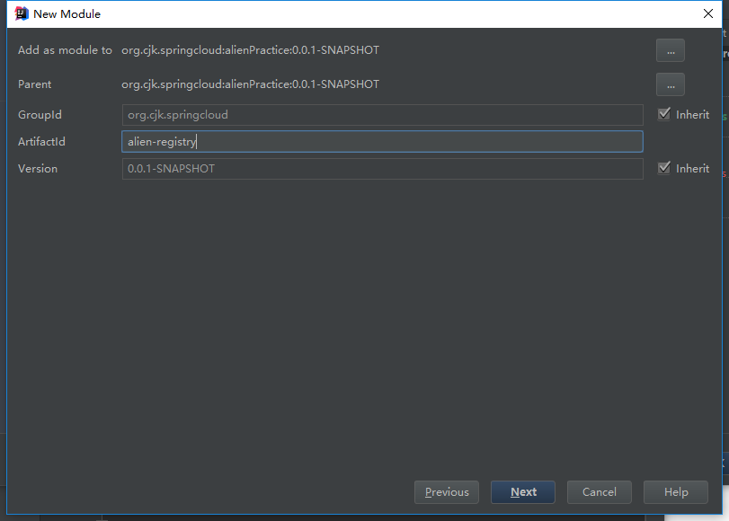
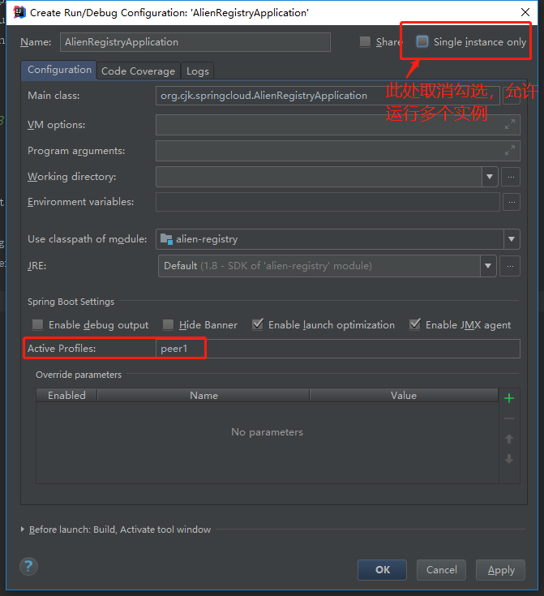
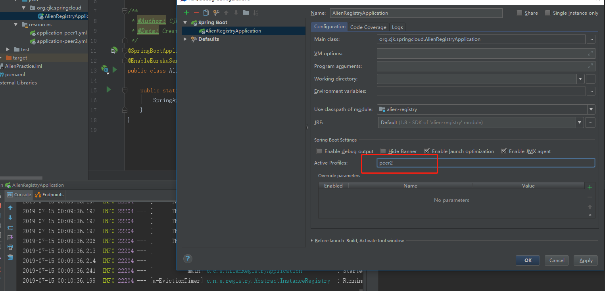
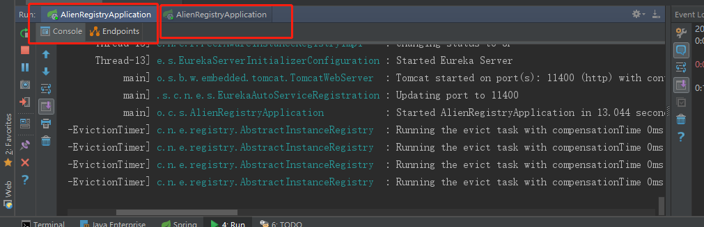
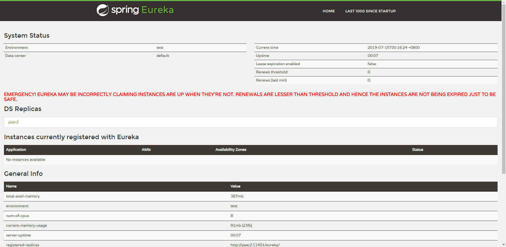

本文为Idea版的实战系列，主要是由于启动项目时有一些不同的地方，以及Maven多模块项目在Idea和Eclipse的构建方式不同，所以写一篇Idea版。
新建父项目alienPractice
新建空项目

命名随意， 我这边命名为 alien-empty-project
一路确定后会自动跳出如下页面

点击新建模块，选择maven

点击next之后输入 GroupId: org.cjk.springcloud, ArtifactId: alienPractice
生成完后删除src 文件夹, 修改pom 文件
pom文件
1
2
3
4
5
6
7
8
9
10
11
12
13
14
15
16
17
18
19
20
21
22
23
24
25
26
27
28
29
30
31
32
33
34
35
36
37
38
39
40
41
42
43
44
45
46
47
48
49
50
51
| <project xmlns="http://maven.apache.org/POM/4.0.0" xmlns:xsi="http://www.w3.org/2001/XMLSchema-instance" xsi:schemaLocation="http://maven.apache.org/POM/4.0.0 http://maven.apache.org/xsd/maven-4.0.0.xsd">
<modelVersion>4.0.0</modelVersion>
<groupId>org.cjk.springcloud</groupId>
<artifactId>alienPractice</artifactId>
<version>0.0.1-SNAPSHOT</version>
<packaging>pom</packaging>
<description>SpringCloudPractice</description>
<parent>
<groupId>org.springframework.boot</groupId>
<artifactId>spring-boot-starter-parent</artifactId>
<version>2.0.3.RELEASE</version>
<relativePath/>
</parent>
<properties>
<project.build.sourceEncoding>UTF-8</project.build.sourceEncoding>
<project.reporting.outputEncoding>UTF-8</project.reporting.outputEncoding>
<java.version>1.8</java.version>
<spring-cloud.version>Finchley.RELEASE</spring-cloud.version>
</properties>
<dependencies>
<dependency>
<groupId>org.springframework.boot</groupId>
<artifactId>spring-boot-starter-test</artifactId>
<scope>test</scope>
</dependency>
</dependencies>
<dependencyManagement>
<dependencies>
<dependency>
<groupId>org.springframework.cloud</groupId>
<artifactId>spring-cloud-dependencies</artifactId>
<version>${spring-cloud.version}</version>
<type>pom</type>
<scope>import</scope>
</dependency>
</dependencies>
</dependencyManagement>
<build>
<plugins>
<plugin>
<groupId>org.springframework.boot</groupId>
<artifactId>spring-boot-maven-plugin</artifactId>
</plugin>
</plugins>
</build>
</project>
|
到此父工程构建完成
构建子模块alien-registry
父工程右键点击 New –> Module 创建子模块 alien-registry

修改 alien-registry的pom 文件
1
2
3
4
5
6
7
8
9
10
11
12
13
14
15
16
17
18
19
20
21
| <?xml version="1.0" encoding="UTF-8"?>
<project xmlns="http://maven.apache.org/POM/4.0.0"
xmlns:xsi="http://www.w3.org/2001/XMLSchema-instance"
xsi:schemaLocation="http://maven.apache.org/POM/4.0.0 http://maven.apache.org/xsd/maven-4.0.0.xsd">
<parent>
<artifactId>alienPractice</artifactId>
<groupId>org.cjk.springcloud</groupId>
<version>0.0.1-SNAPSHOT</version>
</parent>
<modelVersion>4.0.0</modelVersion>
<artifactId>alien-registry</artifactId>
<dependencies>
<dependency>
<groupId>org.springframework.cloud</groupId>
<artifactId>spring-cloud-starter-netflix-eureka-server</artifactId>
</dependency>
</dependencies>
</project>
|
在新建一个类，AlienRegistryApplication 作为SpringCloud -Eureka的启动类。
启动一个服务的注册中心， 只需要在启动类上添加 @EnableEurekaServer 注解即可。完整代码如下
1
2
3
4
5
6
7
8
9
10
11
12
13
14
15
16
17
18
| package org.cjk.springcloud;
import org.springframework.boot.SpringApplication;
import org.springframework.boot.autoconfigure.SpringBootApplication;
import org.springframework.cloud.netflix.eureka.server.EnableEurekaServer;
@SpringBootApplication
@EnableEurekaServer
public class AlienRegistryApplication {
public static void main(String[] args) {
SpringApplication.run(AlienRegistryApplication.class, args);
}
}
|
要想配置一个高可用的注册中心， 最重要的是其配置文件application.yml 的配置，可以已配置多个application.yml，之后启动多个实例时指定spring.profiles.active来指定要加载的配置文件，从而使各个EurekaServer通过serviceurl来互相关联， 使其具有高可用性。
在 src/main/resources 目录下新建两个文件 application-peer1.yml 和 application-peer2.yml
配置如下 peer1:
1
2
3
4
5
6
7
8
9
10
11
12
13
14
15
16
17
18
19
20
21
22
23
24
25
|
server:
port: 11400
spring:
profiles: peer1
eureka:
instance:
hostname: peer1
client:
serviceUrl:
defaultZone: http://peer2:11401/eureka/
fetchRegistry: false
registerWithEureka: false
server:
enableSelfPreservation: true
renewalPercentThreshold: 0.49
peer-node-read-timeout-ms: 1000
|
peer2:
1
2
3
4
5
6
7
8
9
10
11
12
13
14
15
16
17
18
| server:
port: 11401
spring:
profiles: peer2
eureka:
instance:
hostname: peer2
client:
serviceUrl:
defaultZone: http://peer1:11400/eureka/
fetchRegistry: false
registerWithEureka: false
server:
enable-self-preservation: true
renewalPercentThreshold: 0.49
peer-node-read-timeout-ms: 1000
|
配置hosts文件
Windows系统: C:\Windows\System32\drivers\etc\hosts
Linux系统 /etc/hosts
添加peer节点
1
2
| 127.0.0.1 peer1
127.0.0.1 peer2
|
启动项目
Idea启动和Eclipse启动稍微有点不一样，按照下图设置

之后点击run运行，运行完成一个后 ，如下图修改配置

配置完后在启动一个，就可以启多个注册中心实例了。
如下图

点击 http://peer1:11400 去查看注册中心。（PS: 如果前面没配置hosts的话，应该可以去 http://localhost:11400 去查看）

到此，Idea版的注册中心搭建也已全部完成